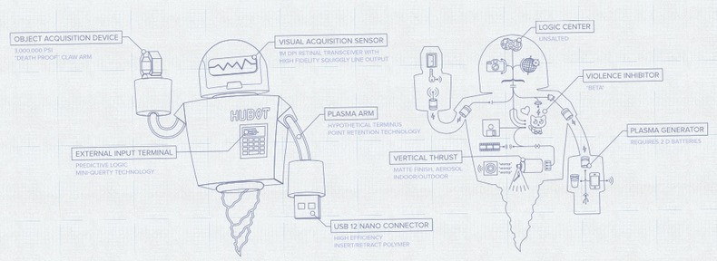
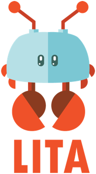
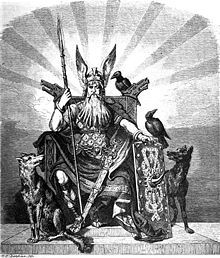

In the antediluvian days before Google found everything for us, personal software agents were going to continuously do our bidding in cyberspace, tracking down air fares, making stock trades and otherwise doing futuristic things that we soon wouldn’t be able to live without. The anxiety of Y2K rose and crested, and the messianic aura of agents was washed away by more centralized and effective solutions.
The aspirational residue did yield some nuggets, and the idea has found partial success in the form of the bot. In the popular imagination bots exist on Twitter as art projects or as marketing machines or as the perfect online dating scandal.
Bots can be characterized by asking a few questions, and from these answers we can tell something about their implementation and what it takes to build one: Do they react to messages? Do they know who they are talking to? Can they learn from what was said? Do they know where the conversation is taking place? Do they remember the overall conversation?
From this, we can classify bots into one of six types:
- Notifiers
- Reactors
- Space Reactors
- Responders
- Space Responders
- Conversationists
Each of these have progressively more complex context that the bot is operating in. Most chat mediums have different message types, where message can be directed towards or private to a particular user. Confounding things further, some have a native concept of spaces, generally called a room or a channel, and as we treat people differently in different context the bot will also need to be aware of the difference context that the conversion is taking place. We can call those services Spaced.
| Service | Spaced | Notes |
|---|---|---|
| SMS | No | Groups are a dynamic list of people |
| Desktop Notifications | No | Stuck on one computer |
| Push Notifications | No | One way communication |
| AIM | No | Group chat not core usage |
| GChat | No | Group chat not core usage |
| iMessage | No | Groups are a dynamic list of people |
| No | Lists aren't groups | |
| Yammer | Yes | Sorta |
| IRC | Yes | Channels |
| HipChat | Yes | Rooms |
| Slack | Yes | |
| Campfire | Yes | Rooms |
Keeping track of User / Space context is more challenging than just User context
Notifiers
Notifiers are the “simplest type”of bots, in the sense that the messaging logic is a minor part of the overall program. As a consequence they are the most common and the most varied.
- Broadcast a message based upon an external source
- Don’t react to messages, so the answers to all the other questions are irrelevant.
The trick in Notifiers is in figuring out what to say, not sending the message.
# Twitter Example
message = "Hello, World"
client.update( message )# AppleScript from the command line example
$ MESSAGE="Hello, World"
$ /usr/bin/osascript -e "display notification \"$MESSAGE\""# Using the terminal-notifier gem
require 'terminal-notifier'
TerminalNotifier.notify "\u2705 green!", :title => "Hello, World"These are best implemented by having one program generate the information, and sending that to another program that sends the message to the chat service. This could be a monitoring agent that is checking to see if a URL is responding, and if not, sends an alert. It could be a build process that returns a success or failure message.
It could be a program that selects “the next word” from a lists of words and tweets one out every hour. Or it could make a bunch of API calls to different services, correlate that with information from a database, do more complicated calculations, and then post it. There’s a bot that monitors the top links on hacker news, so it needs to pull down a list of top content, keep track of if it’s tweeted it out before, and then send out the message. The sending part is simple, but the overall bot may not be.
Reactors
Reactors take action based upon incoming messages, but have no memory of who it’s talking with or what space it’s talking in. The who and where maybe in the message headers, and the bot can return the message in the correct place, but there is no bot-persisted memory of them.
- Reacts to messages on the chat service
- Doesn’t remember anything that was said
The basic idea is that a reactor gets a message, does something with it, and moves on. A lot of twitter bots follow this pattern, where they are looking at things on the stream and commenting upon them.
on_message( message ) = ->
result = act_on_message( message )
message.reply( result )
For example, here’s something that listens for tweets matching the string not a feminist and reacts by tweeting that that user isn’t a feminist:
streaming_client.filter(track: "not a feminist") do |object|
if object.is_a?( Twitter::Tweet ) && object.user.user_name != BOT_NAME
client.update( ". @#{object.user.user_name} is not a feminist" )
end
endIt could do something more interesting, like looking for an image url, downloading it, running it through ImageMagick, posting it to S3, and then tweeting it back out. But since the bot itself keeps no message or user state, we consider it a reactor.
Message Dispatching
Here we reach a phase change in the level of ambient complexity of the bot. Simple Reactors respond to all messages the same way, relying on the filter to select messages that it cares about. More complex reactors need to figure out what message it’s being sent and reply differently:
Case loop:
on_message( message ) = ->
dispatch( message )
dispach( message ) = ->
case message.text
when /^echo/
do_echo( message )
else
message.reply( "Don't know what you mean" )
do_echo( message ) = ->
message.reply( message )
Command objects:
on_message( message ) = ->
dispatch( message )
dispatch( message ) = ->
command = find_command_object( message )
command.execute( message )
echo_command.execute( message ) = ->
message.reply( message )
This can also be done using metaprogramming, something like this:
class Dispatcher
dispatch( message ) = ->
if reponds_to? message.command
self.send( message.command, message )
class MyBotClass < Dispatcher
echo( message ) = ->
message.reply( message )
bot = MyBotClass.new
on_message( message ) = ->
bot.dispatch( message )
That is nonsense pseudo code, but a lot of chat bot libraries focus in on that area doing something very similar to what Thor does for command line programs.
Space Reactors
Space Reactors, in addition to having an awesome name, react to incoming messages, and know where they are receiving a message. The bot has memory of the place, and will respond to the user differently depending upon where the conversation was taking place.
- Reacts to messages on the chat service
- Knows where its being addressed
- Doesn’t remember anything that was said
When a reactor is run in on Spaced chat medium, it needs to factor in where the message was received. Instead of having user and message to work with, it now has user, message, and space.
You can either find the space within each of the commands:
class MyBot < Dispatcher
wtf( message ) = ->
space = find_space_from( message )
commit_message = space.last_commit_message
message.reply( commit_message )
bot = MyBot.new
on_message( message ) = ->
bot.dispatch( message )
Or locate the commands inside of the space, which lets you separate out which commands are available depending the properties of the space.
class PublicSpaceReactor < Dispatcher
wtf( message ) = ->
message.reply( "This space has no commits" )
class ProjectSpaceReactor < Dispatcher
wtf( message ) = ->
message.reply( project.last_commit_message )
class SpaceDispatcher < Dispatcher
dispatch( message ) = ->
space = find_space( message )
responder = nil
if space.project?
responder = ProjectSpaceReactor.new( space.project )
else
responder = PublicSpaceReactor.new
responder.dispatch( message )
bot = SpaceDispatcher.new
on_message( message ) = ->
bot.dispatch( message )
If you have a HipChat bot and have a room for each company project, and you want to have the bot respond to wtf with the last commit message on github. The first thing that you need to do is look at which room the message came from, and correlate that a list of repositories, then make a Github API call, and finally post the commit message back to the room.
# This is a lita based bot, which provides dispatching
# so we find the space inside of the command
def wtf(response)
project = find_project response.message.source.room
message = project.last_commit_message
response.reply message
endThe find_project method implies that you now need to have persistent state associated with the Space, in this case the unspecified project object. It’s not just a matter of making sure that your reply goes to the correct place, but that what you reply will changed based upon where the person said it.
Responders
Responders listen for messages and remember what was said to them. They are different from Reactors because they have persisted User state, and so can learn something from the user.
- Reacts to messages
- Knows who they are talking to
- Can learn from what was said
It’s natural here to include the dispatching inside of the object that keeps track of the user state. Here’s a pseudo example of a bot that lets you update your nickname. First by loading the user inside of the Bot:
class NickBot < Dispatcher
nick( message ) = ->
user = User.load_from_datastore( message.user )
user.nickname = message.arg1
user.save
message.reply( "Your nick name has been updated to " + message.arg1 )
bot = NickBot.new
on_message( message ) = ->
bot.dispatch( message )
But it may also make sense to create different types of dispatchers for different users, in this pseudo code there are 3 different types of responders and depending upon who is sending the message different functions are available to them:
class AnonymousUserResponder < Dispatcher
nick( message ) = ->
user.nickname = message.arg1
user.save
message.reply( "Your nick name has been updated to " + message.arg1 )
class NamedUserResponder < AnonymousUserResponder
comment( message ) = ->
create_a_comment( user.nickname, message )
message.reply( "Thanks for the message" )
class AdminResponder < NamedUserResponder
restart( message ) = ->
restart_server
message.reply( "You've restarted the server" )
class UserDispatcher < Dispatcher
dispatch( message ) = ->
user = User.load_from_datastore( message.user )
responder = nil
if user.admin?
responder = AdminResponder.new( user )
elseif user.nickname?
responder = NamedUserResponder.new( user )
else
responder = AnonymousUserResponder.new( user )
responder.dispatch( message )
bot = UserDispatcher.new
on_message( message )
bot.dispatch( message )
This example is misleading because in real life direct inherency doesn’t scale well, as we’ll see below.
Space Responders
Space Responder learn things about who is talking with them and the context in which they are speaking.
- Reacts to messages
- Knows who they are talking to
- Can learn from what was said
- Knows where its being addressed
The challenge here is how do you juggle the permutations of state. Lets take the example of a user is an admin in one project, where they can send commands to reboot the server, and in another project they can only open new tickets. In the basic case, you can do everything in each of your methods:
class ServerBot < Dispatcher
restart( message ) = ->
user = find_user( message )
space = find_space( message )
if space.is_admin?( user )
restart_server
message.reply( "Go go go" )
else
message.reply( "Sorry Charlie, try again" )
ticket( message ) = ->
space = find_space( message )
ticket = space.create_ticket_message( message )
message.reply( ticket.id + " has been created" )
bot = ServerBot.new
on_message( message ) = ->
bot.dispatch( message )
Lets say that we had two different types of users, admins or not, and two different types of spaces, one that mapped to a project and another that mapped to a hangout area. We could expand out idea of the SpaceDispatcher to return a different command object based upon the combinations.
class SpaceDispatcher < Dispatcher
dispatch( message ) = ->
space = find_space( message )
user = find_user( message )
if !space.project?
if space.is_admin?( user )
AdminLobbyResponder.new( space, user ).dispatch( message )
else
LobbyResponder.new( space, user ).dispatch( message )
else if space.is_admin?( user )
AdminSpaceResponder.new( space, user ).dispatch( message )
else
ProjectResponder.new( space, user ).dispatch( message )
class LobbyResponder < Dispatcher
vote( message ) = ->
votes = space.tally_term( message )
message.reply( "That totals: " + votes )
class AdminLobbyResponder < LobbyResponder
topic( message ) = ->
space.set_topic( message )
message.reply( "Topic updated" )
class ProjectResponder < LobbyResponder
ticket( message ) = ->
ticket = space.create_ticket( message )
message.reply( ticket.id + " has been created" )
class AdminProjectResponder < ProjectResponder
restart( message ) = ->
restart_server
message.reply( "Server restarted" )
bot = SpaceDispatcher.new
on_message( message ) = ->
bot.dispatch( message )
We’re also using inheritance to include all of the methods that the regular user can do into the class that has all of the Admin methods. This pseudocode has turned into an unholey mixture of Ruby and CoffeeScript, so it probably isn’t work doing into language details with this. But straight up inheritance doesn’t work well for this type of reuse, and in our example project admins won’t be able to change the topic. These commands would better be structured as mixins.
Conversationists
The final, and technically most complicated type of bot to write is a Conversationalist.
- Reacts to messages
- Knows who they are talking to
- Can learn from what was said
- Has conversational state
- Knows where its being addressed
The basic structure is:
class Conversation < Dispatcher
# knowledge collected during the course of the conversation #
# state machine mapping conversion state #
dispatch( message ) = ->
# Store incoming message in log
# interpret the response based upon the current state
# print a message on state transition
class ChatBot < Dispatcher
dispatch( message ) = ->
user = find_user( message )
conversation = user.current_conversation
conversation.dispatch( message )
bot = ChatBot.new
on_message(message) = ->
bot.dispatch( message )
The User object is responsible for keeping track of conversations. current_conversation can be smart enough to create a new conversation when things are stale or if there user explicitly closed out an active one.
Here is an example of code from a bot that asks you questions about where you are and what sort of food you are looking for. It searches a number of APIs in the background to see what information it can get from what you say. The code is written with an Adaptor to talk Twitter or GChat, and they both have a different idea of location. Sometimes it can get an accurate enough location the message metadata, but more likely it’s too vague and it will ask you to clarify. (Not all of that logic is below, but its useful to demonstrate the use of the state machine.)
The knowledge attributes are what the bot knows in the conversation. Below you’ll see an example of knowledge of the conversation from the state machine, knowledge of what as been said from previous messages, and knowledge of deduction from the content and context of the messages.
class ConversationResponder
# State Machine
workflow do
state :new do
event :process_message, :transitions_to => :processing_location
end
state :processing_location do
event :needs_location, :transitions_to => :clarify_location
event :location_clear, :transitions_to => :has_location
end
state :clarify_location do
event :process_message, :transitions_to => :processing_location
end
state :has_location do
event :needs_keywords, :transitions_to => :clarify_keywords
event :has_keywords, :transitions_to => :processing_keywords
end
state :clarify_keywords do
event :process_message, :transitions_to => :processing_keywords
end
state :processing_keywords do
event :needs_keywords, :transitions_to => :clarify_keywords
event :needs_location, :transitions_to => :clarify_location
event :found_places, :transitions_to => :refining_selection
event :no_places_found, :transitions_to => :clarify_keywords
end
state :refining_selection do
event :process_message, :transitions_to => :processing_keywords
end
end
# Knowledge Attributes
def looking_for_location?
!knows_location? || location_vague?
end
def knows_location?
!lat.blank? && !lng.blank?
end
def location_vague?
return false if location_range == "ROOFTOP" || location_range == "RANGE_INTERPOLATED"
#Added by Jon so that zip codes are sufficient
return false if location_range == "APPROXIMATE"
#TODO: put more intelligence into this: eg location_range = "GEOMETRIC_CENTER" is good enough for Iowa but not for NYC
true
end
def location_name
if knows_location?
status,address = Geocode.reverse_geocode([lat,lng])
return address
else
return nil
end
end
def looking_for_places?
places.count == 0
end
def have_keyword_messages?
!keyword_messages.nil? && keyword_messages.length > 0
end
def keyword_messages
@keyword_messages ||= messages.select{ |x| x.looks_like_keyword? && !x.is_a?( OutgoingMessage ) }
end
def keywords
keyword_messages.collect { |x| x.search_terms }.join( ", ")
end
end
Thats the shape of it
Notifiers, Reactors, Space Reactors, Responders, Space Responders, and Conversationists. Writing Notifiers and Reactors are more playful, and as you get into things later in the list you spend a lot more time dealing with code and logic complexity.
The distinction between a Spaced and Global chat medium is something that makes using chat libraries, and building Adapters to different services difficult. If the library was built with a Spaced service in mind it’s pretty straightforward to make it work for one, but going the other way isn’t swimming upstream.
Towards a taxonomy of Twitter Bots
BotSummit was a few days ago, and a bunch of people got together to talk about Twitter bots that they made largely as art projects. Here’s a draft of a taxonomy of Twitter bots made by Tully Hanson. In the parlance of this post, these are mainly Notifiers and Reactors, with some possible Responders thrown in:

Here’s the source document
Notifiers are interesting not because of their technology, but because of what they actually do. Here’s a list of ideas that people came up with.
Agents of Note
Hubot from Github is a company chat bot written in Node

GitHub, Inc., wrote the first version of Hubot to automate our company chat room. Hubot knew how to deploy the site, automate a lot of tasks, and be a source of fun in the company. Eventually he grew to become a formidable force in GitHub. But he led a private, messy life. So we rewrote him.
Image from Hubot site
Lita is similar to Hubot but written in Ruby

Image from Lita
Huginn is your agent, standing by

Huginn takes a bit to install, but it’s a full on software agent of the old school.
Huginn is a system for building agents that perform automated tasks for you online. They can read the web, watch for events, and take actions on your behalf. Huginn’s Agents create and consume events, propagating them along a directed graph. Think of it as a hackable Yahoo! Pipes plus IFTTT on your own server. You always know who has your data. You do.
We’re just getting started, but here are some of the things that you can do with Huginn right now:
- Track the weather and get an email when it’s going to rain (or snow) tomorrow (“Don’t forget your umbrella!”)
- List terms that you care about and receive emails when their occurrence on Twitter changes. (For example, want to know when something interesting has happened in the world of Machine Learning? Huginn will watch the term “machine learning” on Twitter and tell you when there is a large spike.)
- Watch for air travel or shopping deals
- Follow your project names on Twitter and get updates when people mention them
- Scrape websites and receive emails when they change
- Connect to Adioso, HipChat, Basecamp, Growl, FTP, IMAP, Jabber, JIRA, MQTT, nextbus, Pushbullet, Pushover, RSS, Bash, Slack, StubHub, translation APIs, Twilio, Twitter, Wunderground, and Weibo, to name a few.
- Compose digest emails about things you care about to be sent at specific times of the day
- Track counts of high frequency events and send an SMS within moments when they spike, such as the term “san francisco emergency”
- Send and receive WebHooks
- Run arbitrary JavaScript Agents on the server
- Track your location over time
- Create Amazon Mechanical Turk workflows as the inputs, or outputs, of agents. (“Once a day, ask 5 people for a funny cat photo; send the results to 5 more people to be rated; send the top-rated photo to 5 people for a funny caption; send to 5 final people to rate for funniest caption; finally, post the best captioned photo on my blog.”)
_Image “Odin, der Göttervater” by Carl Emil Doepler (1824-1905) - Wägner, Wilhelm. 1882. Nordisch-germanische Götter und Helden. Otto Spamer, Leipzig & Berlin. Page 7.. Licensed under Public domain via Wikimedia Commons - Link_
{kind=link}
Let me know cool things you build!